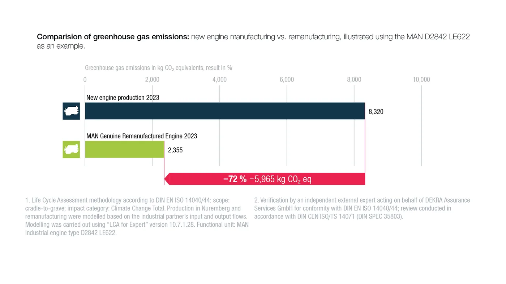

MAN publicó el 27 de agosto los resultados de una evaluación de ciclo de vida sobre la remanufactura industrial de motores. El trabajo fue realizado por la Universidad de Bayreuth y revisado por un experto independiente en representación de DEKRA Assurance Services.
El caso comparó la producción y entrega de un motor ferroviario MAN D2842 LE622 nuevo con una unidad del mismo tipo remanufacturada. Dentro de esos límites, el segundo proceso generó 72% menos emisiones equivalentes de gases de efecto invernadero.
Qué se comparó exactamente
La fabricación y entrega del motor nuevo representó 8.320 kg de CO2 equivalente. La unidad remanufacturada alcanzó 2.355 kg bajo el mismo alcance. La diferencia fue de 5.965 kg, equivalente al 72% informado.
El indicador CO2 equivalente reúne el efecto climático de distintos gases en una medida común. No significa que todas las emisiones sean dióxido de carbono directo ni incluye automáticamente toda la etapa de uso del motor.
Este punto es fundamental: el estudio cuantifica producción y entrega dentro de límites definidos. No afirma que un motor remanufacturado consuma 72% menos combustible durante su funcionamiento.
Materiales que vuelven al circuito
El beneficio principal aparece al conservar componentes que todavía pueden recuperar especificación. La necesidad de material nuevo bajó de 1.745 a 344 kg, una reducción aproximada del 80%.
Bloques, cigüeñales, carcasas y otras piezas de alto contenido material requieren energía para fundición, mecanizado y transporte. Reutilizarlas después de inspección y procesamiento evita comenzar cada ciclo desde materia prima.
No todo se conserva. Elementos de desgaste, sellos, juntas y componentes fuera de tolerancia deben reemplazarse. La remanufactura seria decide mediante medición y criterios técnicos, no por apariencia.

Menos movimientos logísticos
El estudio también calculó el transporte asociado a los componentes. Pasó de 99.033 a 12.511 toneladas-kilómetro, una reducción del 87%. La unidad tonelada-kilómetro combina masa y distancia para describir trabajo logístico.
Cuando se reutilizan piezas principales, disminuye la necesidad de mover materia prima y componentes desde múltiples proveedores. El núcleo usado debe llegar a la planta, pero el circuito total puede ser considerablemente más corto.
Remanufacturar no es solamente reparar
Un motor usado puede recibir una reparación puntual para corregir una falla. Una reconstrucción puede renovar un conjunto amplio según el criterio del taller. La remanufactura industrial agrega un proceso estandarizado para devolver la unidad a especificaciones definidas.
Normalmente incluye desmontaje completo, limpieza, inspección, medición, mecanizado o recuperación de piezas aptas, reemplazo de componentes críticos, montaje controlado y prueba final. La trazabilidad del núcleo y de las operaciones forma parte del valor.
Eso no convierte automáticamente a cualquier motor pintado en una unidad remanufacturada. El comprador debe conocer alcance, tolerancias, banco de pruebas, garantía y responsable técnico.
Qué encontró el análisis de varios ciclos
MAN evaluó escenarios de uso repetido. Un motor nuevo que, después de su primera vida, es remanufacturado una vez reduce 33% las emisiones frente a utilizar dos motores nuevos sucesivos. Si vuelve a remanufacturarse, la reducción llega al 45% frente a tres motores nuevos.
El porcentaje total es menor que el 72% de la comparación individual porque el escenario comienza con un motor nuevo. Aun así, la ventaja se acumula cuando el núcleo puede atravesar más de un ciclo bajo control técnico.
Cómo se validó
La evaluación siguió las normas DIN EN ISO 14040 y 14044 para análisis de ciclo de vida. La Universidad de Bayreuth realizó el trabajo y la revisión crítica quedó a cargo de un experto independiente por cuenta de DEKRA.
La metodología aporta solidez, pero MAN aclara que los resultados corresponden al D2842 LE622 y a las condiciones estudiadas. No deben trasladarse automáticamente como el mismo porcentaje a todos los motores o componentes.
Qué aporta al mundo del camión
El motor analizado es ferroviario, no un propulsor de camión. Sin embargo, el principio es relevante para transporte pesado porque bloques, cajas, alternadores, compresores, pinzas y otros conjuntos también pueden regresar a procesos de remanufactura.
En vehículos con muchos años de servicio, una unidad remanufacturada puede reducir tiempo de inmovilización frente a esperar la reparación del propio conjunto. También conserva recursos y puede ofrecer un costo menor que una pieza nueva.
Qué revisar antes de comprar
- Identificación: número de motor o pieza, variante, calibración y aplicación exacta.
- Alcance: lista de componentes nuevos, recuperados y reutilizados.
- Mediciones: tolerancias aplicadas a block, cigüeñal, cilindros, tapas y tren de válvulas.
- Prueba: protocolo de banco, presión de aceite, temperatura, fugas y desempeño.
- Garantía: plazo, mano de obra, instalación, mantenimiento y condiciones de devolución.
- Núcleo: valor, requisitos y plazo para entregar la pieza usada.
La instalación sigue siendo decisiva
Un motor correctamente remanufacturado puede fallar si la causa original permanece en el vehículo. Antes del montaje hay que revisar refrigeración, admisión, combustible, escape, lubricación y periféricos.
También corresponde limpiar circuitos, reemplazar fluidos y filtros, cebar lubricación y cumplir el procedimiento de puesta en marcha. Documentar presión, temperatura y códigos permite comparar la evolución durante los primeros servicios.
Una cifra útil, con sus límites claros
El 72% ofrece evidencia de que extender la vida de componentes puede reducir el impacto de fabricar y transportar reemplazos. Su valor no está en convertirlo en una promesa universal, sino en mostrar que la remanufactura medible tiene beneficios materiales reales.
Para talleres y repuesteros, el desafío es diferenciar una pieza usada, reparada y remanufacturada. Cuanto más clara sea esa información, mejor podrá el cliente comparar precio, garantía, disponibilidad y vida esperada.